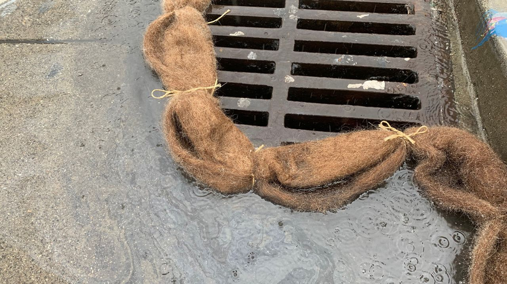

Biology is involved in using human hair against oil pollution due to it being a natural bio-sorbents consisting of dead cells made up of the cuticle, water, lipids, trace elements and 65-95% proteins, mainly polymers of amino acids such as keratin and cysteine, medulla and cortex. The cuticle is highly hydrophobic, which makes it water repellent. It also contains numerous peptide bonds and CO- as well as NH- group which forms hydrogen bonds between neighboring molecules on the human organic follicle surface and has a highly porous cortex.
Oil pollution is caused by oil spills, which often occur in instances when cargo ships leak oil into the water or if there are accidents involving drilling rigs and storage facilities. This is a big problem, because the presence of oil in marine waters can damage sea life and can contaminate waters. If large scale oil spills occur, it can lead to big risks for humans to have severe health problems like heart damage, stunted growth, immune system effects and even death (NOAA, n.d.).

This being said, it has been confirmed that human hair can be used as an absorbent material against oil pollution. This is because human hair is a lipophilic material. Thus, it repels water but actively absorbs oil. According to Berenger, one kilogram of human hair can take up to eight liters of oil, making it a highly effective material for cleaning up spills (Petro Online, 2020).